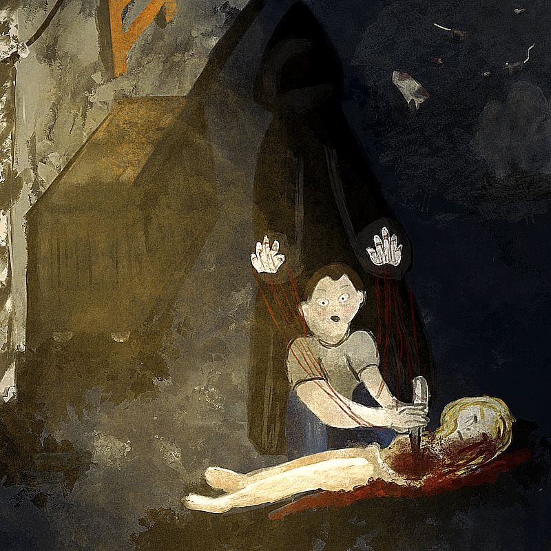

Creacover 2019 : J8
Publié le 21/01/2019 dans Dessin.
La musique du jour est Something Bad (Part 1) de Divine Shade.
Il s’agit ici d’un groupe lyonnais qui démarre. Je l’ai découvert parce qu’un ami joue dans le clip. La musique ne me parait pas terrible. Elle s’apprécie plus quand on l’écoute sans regarder la vidéo, car elle capte trop notre attention. Pas beaucoup d’inspiration avec ce titre…
Finalement, je me suis surtout basée sur le titre et j’ai dessiné quelque chose de mal.
